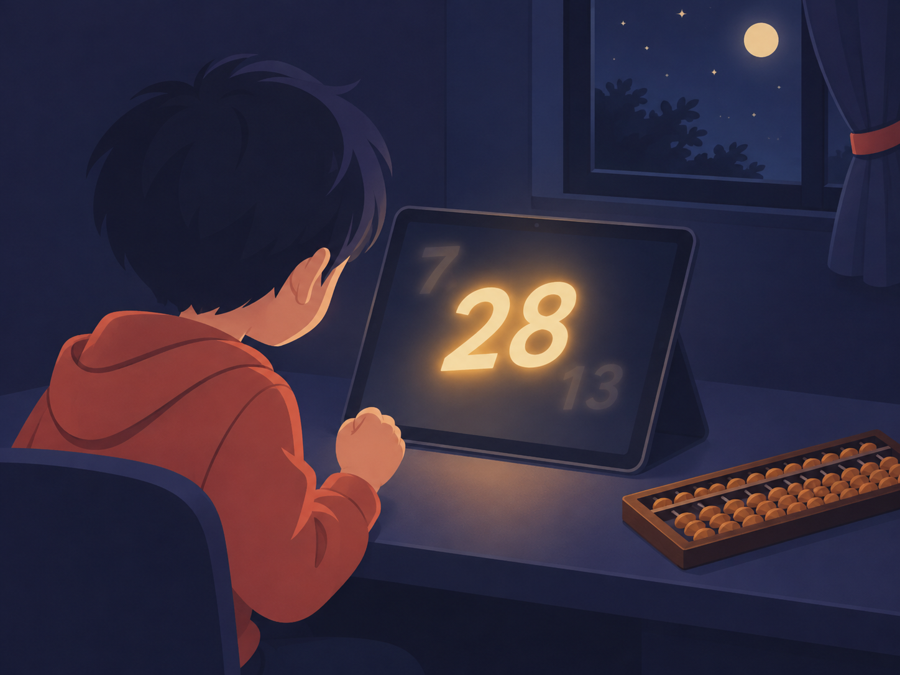

iPhone・iPad 向け・フラッシュ暗算と読み上げ算
数字が、
まばたきの間に出て消える。
「まばたき暗算」は、そろばん教室でおなじみのフラッシュ暗算と読み上げ算を、毎日5分の練習にしたアプリです。見えた数・聞こえた数を頭の中でぜんぶたして、答えを入れる。決めた秒に合わせて出して、実際にかかった秒も見せます。
App Store で見る（準備中）有料アプリです。一度買えば、すべての機能が使えます。あとからお金はかかりません。広告もありません。

こんな困りごとのために作りました
広告で数字が見えない
広告も、アプリ内課金もありません。練習の画面に、数字と答えのボタンのほかは何も出しません。
数字が小さい・ぼやける
数字は画面の大きさから計算して、いちばん大きく描きます。iPhone・iPad・iPhone Duo のどれでも、くっきり出ます。
秒が合っていない気がする
1口目が出てから最後の口が消えるまでを、決めた秒に合わせて組みます。何口目を出すかは始めてからの時間でコマごとに決めるので、遅れが積み重なりません。答えたあとに、実際にかかった秒を出します。
検定や大会の条件で練習したい
桁（1〜6）・口数（2〜30）・秒（1.0〜60.0）・ひき算のあり・なしを決めて、名前をつけて残せます。
まちがえた問題を見直したい
まちがえたら、式と正しい答えを見せて、同じ数を同じ速さでもう一度流せます。1問だけやり直すこともできます。
間違えるとレベルが下がる
60段のステップは、5問中4問で合格。まちがえてもステップは下がりません。
まばたき暗算の流れ
まず1問
はじめに1問、ゆっくり試します。
腕前チェック
だんだん速くなる5問。まちがえたところで止まって、あなたに合うステップを選びます。
毎日5問
ホームの「はじめる」で、5問（または10問）を続けて流します。正解なら自動で次の問題へ。
記録で振り返る
この2週間の正解とまちがい、合格したステップの数がひと目で分かります。
できること
| フラッシュ | 60段のステップ（1桁3口5秒〜3桁15口1.5秒）。画面の更新に合わせて出し、実際の秒を表示 |
|---|---|
| 読み上げ算 | 24段のステップ。「願いましては」「123円なり」「引いては」「では」と、そろばん教室の読み方で読み上げ。速さは3つ |
| じぶんの設定 | 桁 1〜6・口数 2〜30・秒 1.0〜60.0・ひき算。名前をつけて残せる |
| 見直し | まちがえた問題を同じ速さでもう一度見る・1問だけやり直す |
| 見た目 | 夜・昼・黒板。ひき算の数は色を変えて「−」をつける |
| 音 | 数字ごとの音・正解とまちがいの音（消音スイッチが入っていても鳴る。設定で切れる） |
| 記録 | 答えるたびに保存。2週間のグラフ。あなたの iCloud で同期し、機種変更しても残る |
| ショートカット | Siri・ショートカット・アクションボタンから「練習をはじめる」 |
| 広告・課金・登録 | 広告なし・アプリ内課金なし・アカウント登録なし。開発者はデータを集めません |
よくある質問
検定の級や段と同じですか
ステップは、このアプリの段階表です。検定団体の公式アプリではありません。検定や大会の条件で練習したいときは、じぶんの設定に桁・口・秒をそのまま入れてください。
iPad でも使えますか
使えます。iPad の大きな画面いっぱいに数字を出します。キーボードをつないでいれば、数字キーと Return で答えられます。
ネットにつながっていなくても使えますか
使えます。読み上げも iPhone の中で行います。iCloud の同期は、つながったときに行われます。
返金はできますか
返金は Apple の規定に従います。reportaproblem.apple.com からお申し出ください。開発者が直接返金することはできません。
使い方のくわしい説明は 使い方とお問い合わせ にあります。
お問い合わせ
不具合や気になることがあれば、ryo.tsuzukihashi@tsuzukit.com までご連絡ください。作っているのは個人開発者の續橋涼（TsuzuKit）です。